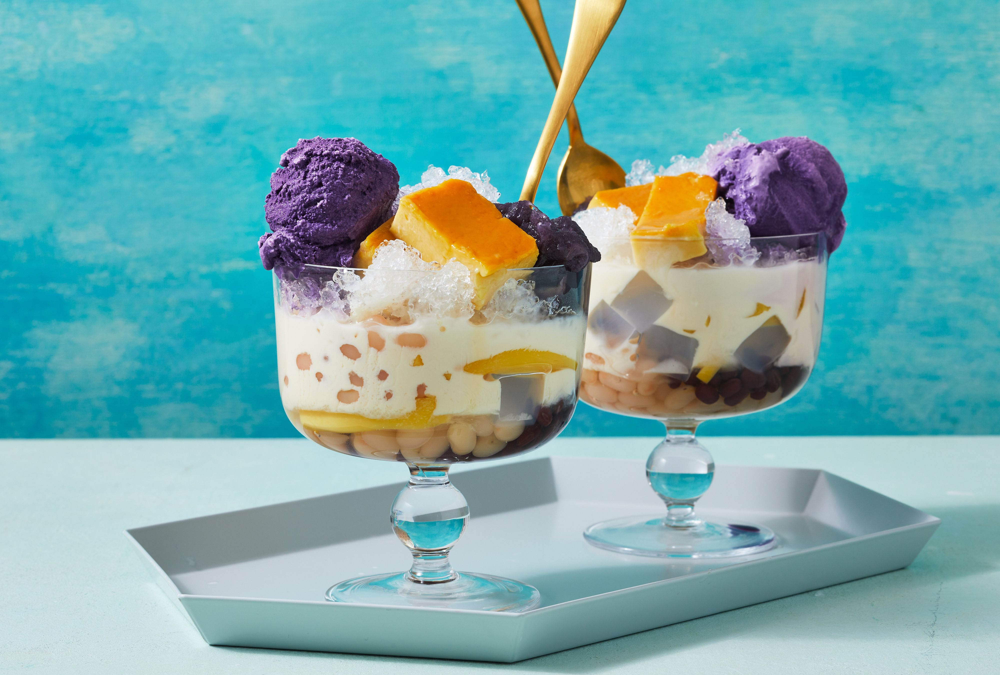

Halo-Halo
Halo-Halo is the ultimate Filipino dessert that screams, "Buhos na lahat!" It's a colorful, chaotic, and oh-so-delicious mix of shaved ice, sweetened fruits, jellies, beans, leche flan, ube halaya, and evaporated milk. Topped with a scoop of ice cream, it's the dessert equivalent of a summer party in your mouth! Whether you're beating the heat or just craving something extra, halo-halo proves that life is better when you mix it all together. Kain na, bago matunaw!

Ingredients:
Base Ingredients:
- 2 cups shaved ice
- 1 cup all-purpose flour1 cup evaporated milk
Halo-Halo Fillings: (Use any combination you like!)
- 1/4 cup sweetened red mung beans
- 1/4 cup sweetened kidney beans
- 1/4 cup nata de coco (coconut gel)
- 1/4 cup kaong (sugar palm fruit)
- 1/4 cup macapuno (coconut strips)
- 1/4 cup sweetened saba bananas (or plantains)
- 1/4 cup jackfruit (langka), sliced
- 1/4 cup gulaman (agar jelly), cubed
Toppings (Optional):
- 1 slice leche flan
- 1 tbsp ube halaya (purple yam jam)
- 1 scoop ice cream (ube, vanilla, or mango flavor)
- Pinipig (toasted rice) or crushed cornflakes (optional)
Recipe:
- Prepare the Glass or Bowl:
- In a tall glass or bowl, layer the halo-halo fillings (beans, fruits, and jellies) at the bottom.
- Add Shaved Ice:
- Pack shaved ice on top of the fillings, filling the glass or bowl.
- Pour Milk:
- Drizzle evaporated milk over the ice, letting it seep through the layers.
- Add Toppings:
- Top with leche flan, ube halaya, and a scoop of ice cream.
- Sprinkle pinipig or crushed cornflakes for added crunch, if desired.
- Serve and Enjoy:
- Serve immediately with a spoon and mix it all up before taking your first bite. Halo-halo is best enjoyed as a messy, colorful dessert!
Perfect for hot days, family gatherings, or when you just want to treat yourself with something uniquely Filipino!